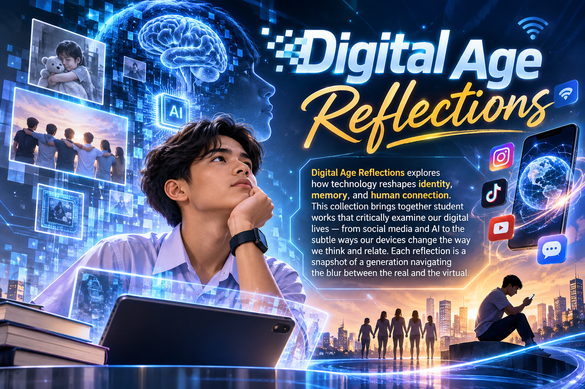

Digital Age Reflections

Digital Age Reflections explores how technology
reshapes identity, memory, and human connection.
This collection brings together student works that critically
examine our digital lives — from social media
and AI to the subtle ways our devices change the way we think
and relate. Each reflection is a snapshot of
a generation navigating the blur between the real and the
virtual.
Because your second semester is very busy with university
entrance exam preparation, this project is designed for you
to complete independently. You will become a Technology
Analyst. Your task is to read real-world news, clip it, and
reflect on how technology is changing our world, our
society, and your future career.
TOPICS TO CHOOSE FROM
- Internet of Things and Immersive Tech
- Introduction to IoT: Connecting the Physical and Digital Worlds
- IoT Components: Sensors, Microcontrollers, and Gateways
- Building a Smart Classroom with Temperature and Light Sensors
- IoT Alert Systems and Automated Light Control
- Controlling Devices Remotely via MQTT
- Designing a Smart School System
- Introduction to AR and VR
- AR in the Real World: Measuring Spaces
- DIY Virtual Reality and Google Cardboard
- Exploring the World with Google Street View VR
- Digital Citizenship, Law, and Careers
- What is a Digital Citizen and Introduction to DQ
- Navigating Online Threats: Cyberbullying, Scams, and Misinformation
- Analyzing the Computer Crimes Act in Thailand
- Copyright, Fair Use, and Creative Commons
- Case Studies in Cyber Ethics
- The Future of Work and How Technology Changes Careers
- AI vs. Human: Which Jobs Will Be Replaced?
- Planning Your Future and Skills Needed for the Digital Economy
- My Future in a Tech-Driven World
-
Choose a topic from the list above and find a current news article,
online article, or magazine clipping related to it.
The news must be current (from the past 6 months).
📚 Student reflections PDF